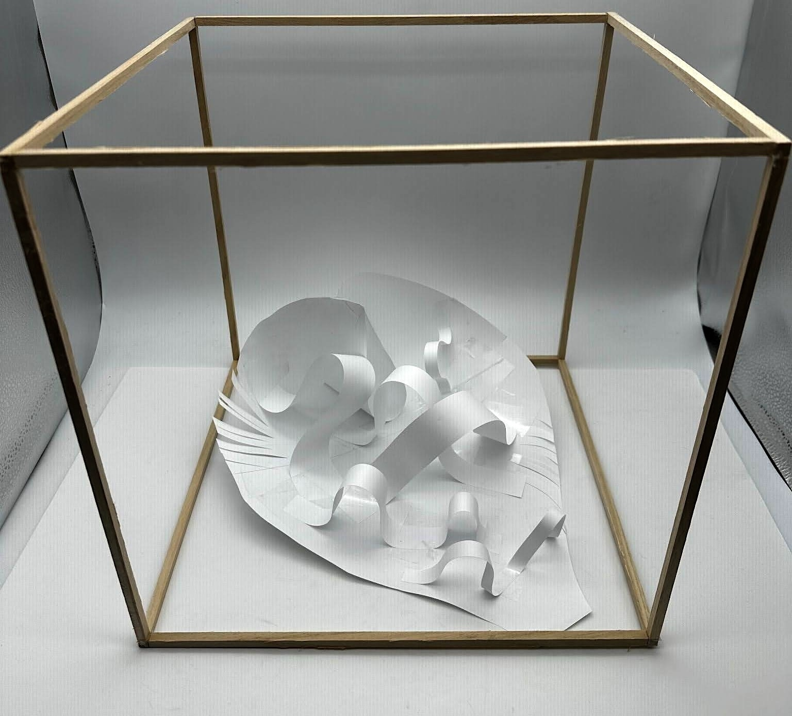
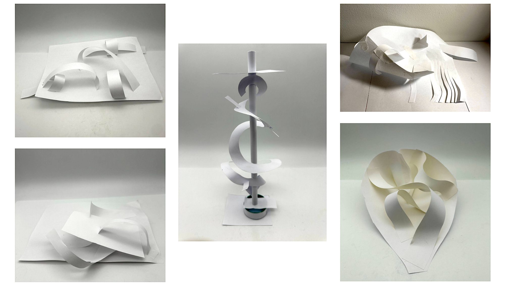
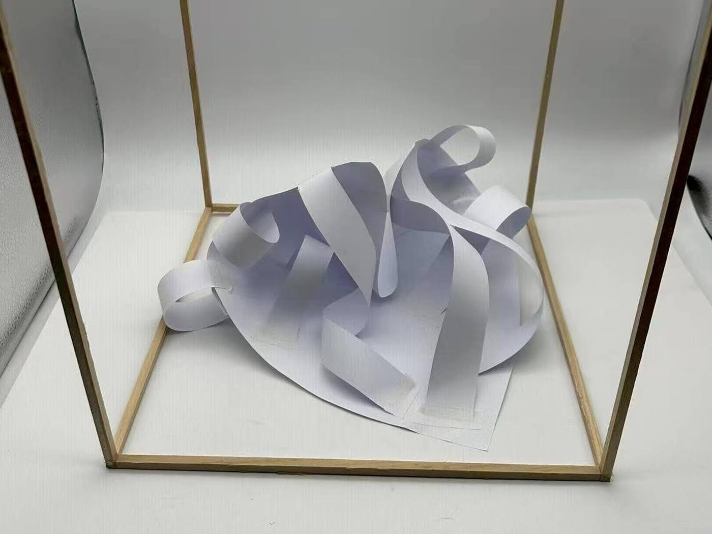
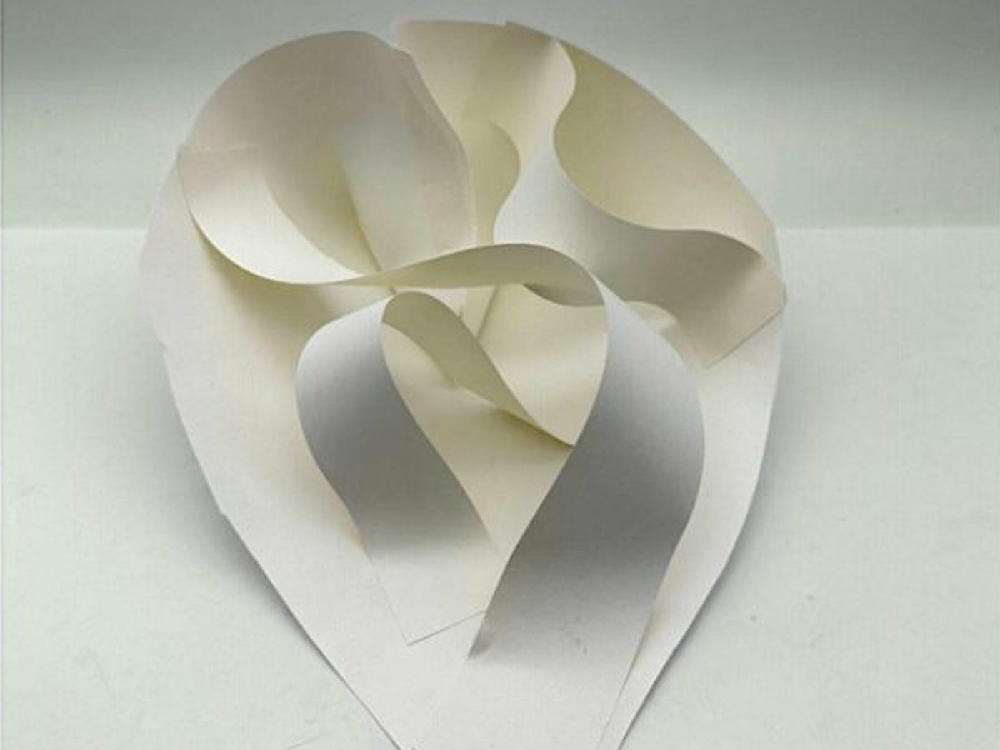

01 — Form
Planar Construction
Exploring form, structure, and space through paper.
- Medium
- Paper
- Focus
- Fluid motion through solid form
1Design statement
Expressing fluidity through solid form by reimagining waves with a strong yet dynamic material.
2Sketch models

The five images above were all sketch models that used different techniques to mimic a liquid motion. Ultimately the bottom right sketch model was chosen as the basis of our development, as its boundaries mimicked a shell and its internal forms embodied the movement of the ocean the most.


3Final model
The final shape is a complex axis, containing twisted and curved planes. The curve of the main shape and the folds of the strips are designed to crash downward, mimicking the collapse of real waves inwards on top of themselves in the ocean.
Drag the slider to compare the chosen sketch model with the final.